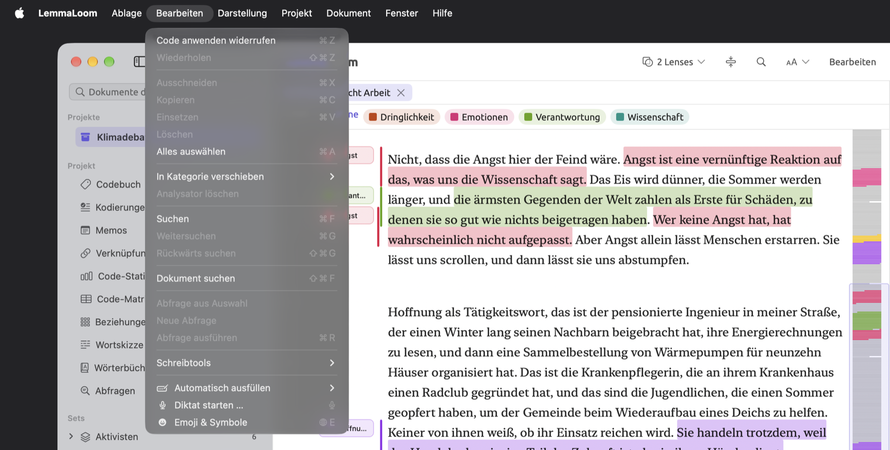
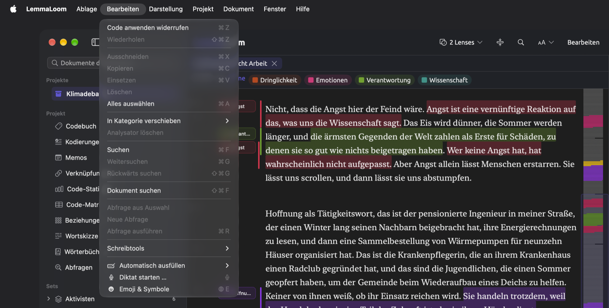
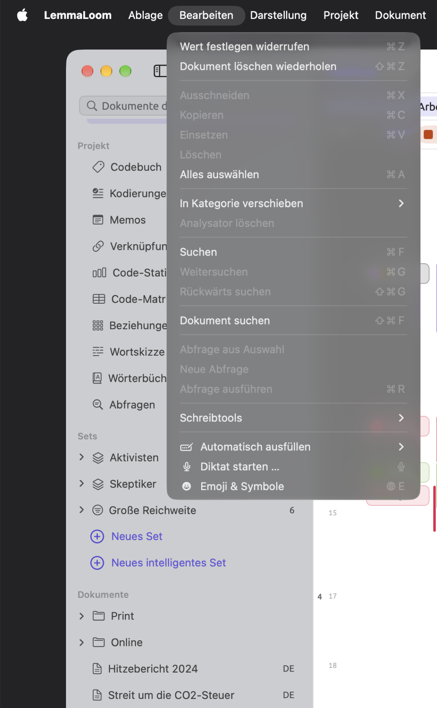
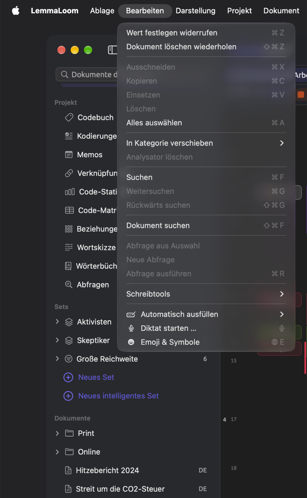
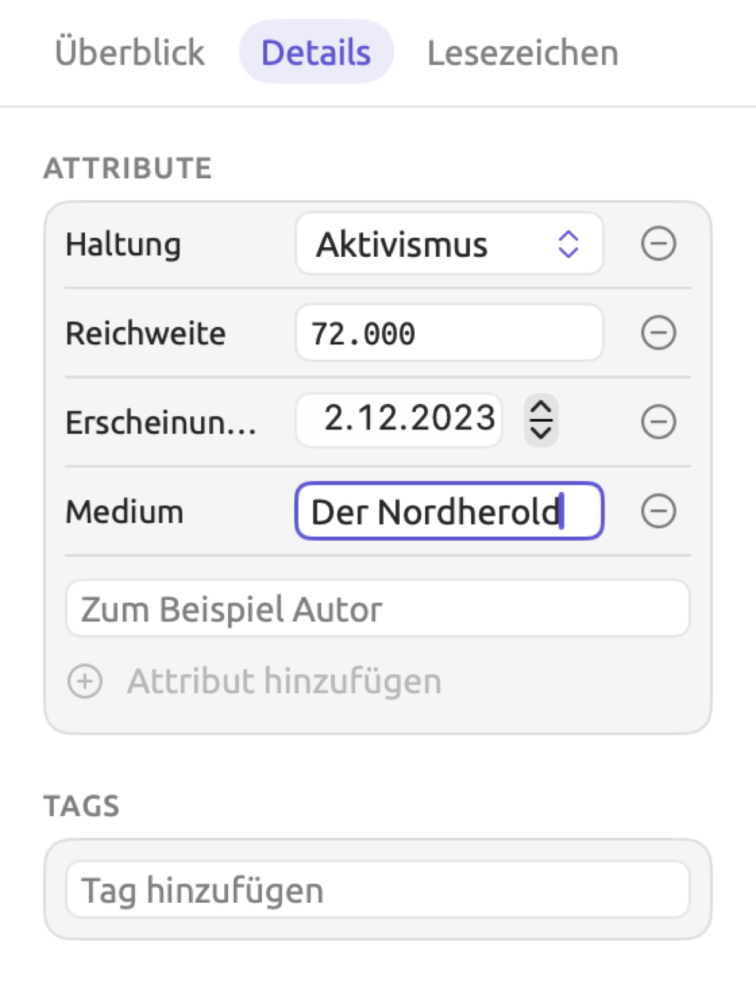
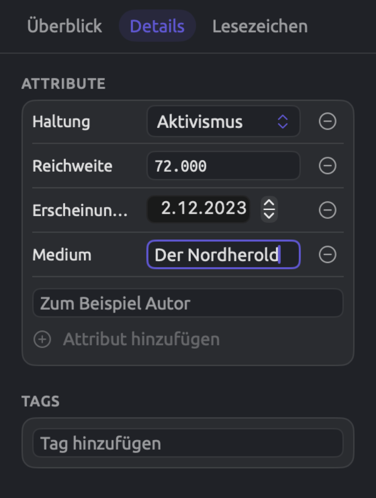
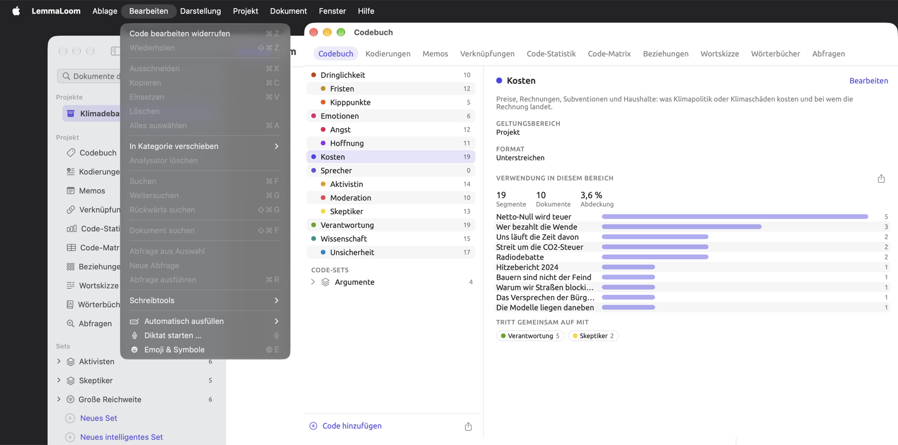
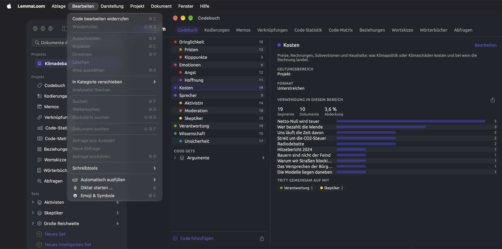

Widerrufen und Wiederholen
LemmaLoom sichert jede Änderung sofort und führt einen Verlauf dieser Änderungen. Mit Bearbeiten ▸ Widerrufen nehmen Sie sie einzeln zurück, die neueste zuerst, bis Sie an der gewünschten Stelle im Verlauf angekommen sind. Fast alles in einem Projekt lässt sich widerrufen, auch das Löschen von Dokumenten und das automatische Kodieren eines ganzen Sets von Dokumenten.
Bevor LemmaLoom ein Projekt, ein Dokument oder einen Code löscht oder zwei Codes zusammenführt, bittet es Sie um Bestätigung. Das meiste andere (etwa Gruppen, Sets, Tags, Attribute, Wörterbücher und Analysatoren) löscht LemmaLoom sofort, ohne nachzufragen. Haben Sie versehentlich etwas gelöscht, holen Sie es mit Bearbeiten ▸ Widerrufen zurück.
Das Löschen eines Projekts ist endgültig, und der Import oder die Übersetzung von Dokumenten leert einen Teil des Verlaufs. Was sich nicht widerrufen lässt weiter unten in diesem Kapitel beschreibt diese Fälle.
Die Beispiele in diesem Handbuch verwenden das Projekt „Klimadebatte“, das der Abschnitt Das Beispielprojekt in Kapitel 1, Einführung ausführlich vorstellt. Zum Üben können Sie es mit Ablage ▸ Importieren ▸ Beispielprojekt importieren.
Wichtige Begriffe
- Ein Schritt ist eine einzelne Aktion, so wie LemmaLoom sie festhält. Sein Name, den das Menü Bearbeiten anzeigt, nennt den Befehl, der die Änderung vorgenommen hat, etwa Code anwenden oder Dokument löschen. Eine einzelne Kodierung ist ein Schritt, und auch ein Durchgang von Automatisch kodieren (siehe Textstellen automatisch kodieren in Kapitel 7, Kodieren), der zweihundert Kodierungen und vier neue Codes anlegt, zählt als ein Schritt.
- Der Widerrufverlauf umfasst alle Schritte, die Sie widerrufen können. Jedes Fenster führt seinen eigenen Widerrufverlauf (siehe Zu welchem Fenster ein Schritt gehört weiter unten in diesem Kapitel).
Eine Änderung widerrufen
- Klicken Sie in das Fenster, in dem Sie die Änderung vorgenommen haben, damit es das aktive Fenster ist. Bei den meisten Änderungen ist das das Hauptfenster.
- Steht die Einfügemarke in einem Textfeld, klicken Sie außerhalb des Feldes.
- Öffnen Sie das Menü Bearbeiten. Der erste Eintrag nennt den Schritt, der widerrufen wird, zum Beispiel Code anwenden widerrufen.
- Wählen Sie den Eintrag, oder drücken Sie ⌘Z.


Um mehrere Schritte zurückzugehen, wählen Sie den Eintrag zum Widerrufen erneut. Jedes Mal nennt das Menü den nächsten Schritt im Verlauf. Drücken Sie mehrmals schnell hintereinander ⌘Z, werden die Schritte der Reihe nach widerrufen. Gibt es nichts mehr zu widerrufen, lautet der Befehl nur noch Widerrufen und ist deaktiviert.
Das Widerrufen stellt alles wieder her, was die jeweilige Aktion verändert hat. Nach Dokument löschen widerrufen zum Beispiel ist das Dokument wieder da, mit seinem ganzen Text, seinen Kodierungen, Memos, Verknüpfungen, Lesezeichen und Attributwerten und seinem Platz in jedem Set.
Kehrt durch das Widerrufen Text zurück, indiziert LemmaLoom diesen Text im Hintergrund erneut (siehe Ein Dokument erneut indizieren in Kapitel 21, Analyse und Indizierung). Den Fortschritt der Indizierung zeigt Fenster ▸ Aktivität (⌥⌘0).
Eine Änderung wiederholen
Nachdem Sie etwas widerrufen haben, bietet das Menü Bearbeiten immer an, die Änderung erneut vorzunehmen, zum Beispiel mit Code anwenden wiederholen. Wählen Sie diesen Eintrag, oder drücken Sie ⇧⌘Z. Sie können so viele Aktionen wiederholen, wie Sie widerrufen haben, die zuletzt widerrufene zuerst.
Wiederholen können Sie nur, bis Sie im selben Fenster eine weitere Änderung vornehmen. Kodieren Sie dort zum Beispiel eine weitere Textstelle, sind die widerrufenen Schritte endgültig verloren, und Wiederholen ist deaktiviert.


Ein Beispiel
Angenommen, Sie arbeiten im Hauptfenster an „Hoffnung braucht Arbeit“. Sie haben eine Textstelle mit „Angst“ kodiert. In der Facette Details im Tab Text des Inspektors haben Sie das Attribut „Medium“ des Essays von „Die Wochenbilanz“ in Der Nordherold geändert. Zuletzt haben Sie „Streit um die CO2-Steuer“ gelöscht. Die Tabelle zeigt, welche Einträge das Menü Bearbeiten nach jeder dieser Aktionen anbietet und nach dem anschließenden Widerrufen und Wiederholen.


| Nr. | Was Sie tun | Eintrag zum Widerrufen | Eintrag zum Wiederholen |
|---|---|---|---|
| 1 | Eine Textstelle mit „Angst“ kodieren | Code anwenden widerrufen | Wiederholen (deaktiviert) |
| 2 | Im Feld „Medium“ den Wert „Die Wochenbilanz“ auswählen, Der Nordherold eingeben, dann in die Leseansicht klicken | Wert festlegen widerrufen | Wiederholen (deaktiviert) |
| 3 | „Streit um die CO2-Steuer“ löschen | Dokument löschen widerrufen | Wiederholen (deaktiviert) |
| 4 | ⌘Z drücken | Wert festlegen widerrufen | Dokument löschen wiederholen |
| 5 | ⌘Z drücken | Code anwenden widerrufen | Wert festlegen wiederholen |
| 6 | ⇧⌘Z drücken | Wert festlegen widerrufen | Dokument löschen wiederholen |
| 7 | Eine weitere Textstelle mit „Hoffnung“ kodieren | Code anwenden widerrufen | Wiederholen (deaktiviert) |
Nach Zeile 4 ist „Streit um die CO2-Steuer“ wieder im Projekt. Nach Zeile 5 steht in „Medium“ wieder „Die Wochenbilanz“, und Zeile 6 bringt Der Nordherold zurück. Durch die neue Kodierung in Zeile 7 ist Wiederholen deaktiviert, und „Streit um die CO2-Steuer“ bleibt im Projekt.
Zeile 2 ist nur ein Schritt, obwohl Sie 14 Zeichen eingegeben haben. Den Grund erklärt In Attributfelder eingegebene Werte weiter unten.
Wie aus Änderungen Schritte werden
Jeder Befehl zählt als ein Schritt, ganz gleich, wie viel er ändert. Zum Beispiel:
- Dokumente löschen mit sechs ausgewählten Dokumenten zählt als ein Schritt. Ebenso entfernt das Löschen von „Uns läuft die Zeit davon“ im selben Schritt auch „Uns läuft die Zeit davon (Englisch)“, denn dieses Dokument ist eine Übersetzung des ersten.
- Auch Sichern in den Dokumenteigenschaften zählt als ein Schritt, unabhängig davon, wie viele Eigenschaften des Dokuments (etwa Name, Tags, Attributwerte oder Sprache) Sie geändert haben.
- Ein Durchgang von Automatisch kodieren zählt als ein Schritt. Das Widerrufen entfernt alle Kodierungen, die der Befehl hinzugefügt hat, und löscht auch die Codes, die er angelegt hat. Wenn Sie auf Stoppen klicken, bevor der Befehl fertig ist, nimmt das Widerrufen alles zurück, was bis dahin geschehen ist.
- Ebenso zählen Treffer mit Lesezeichen versehen … und Zum Wörterbuch hinzufügen im Menü Aktionen einer Abfrage sowie Importieren im Attribute-Fenster bei jedem Aufruf als ein Schritt, der alles umfasst, was sie anlegen.
Das Widerrufen eines Befehls nimmt auch die Änderungen zurück, die er an anderer Stelle vorgenommen hat. Wenn Sie eine Textstelle in „Uns läuft die Zeit davon“ kodieren, legt LemmaLoom dieselbe Kodierung auch in „Uns läuft die Zeit davon (Englisch)“ an. Das Widerrufen von Code anwenden nimmt die Änderung in beiden Dokumenten zurück.
In Attributfelder eingegebene Werte
In der Facette Details im Tab Text des Inspektors und im Attribute-Fenster sichert LemmaLoom den Inhalt von Textattributen automatisch schon während der Eingabe, andere Werte, sobald Sie sie eingegeben haben. Alle Änderungen am selben Feld eines Dokuments fasst LemmaLoom zu einem einzigen Schritt Wert festlegen zusammen, solange kein anderer Schritt dazwischenliegt.
Wenn Sie Der Nordherold in „Medium“ eingeben, entsteht ein einziger Schritt; Bearbeiten ▸ Wert festlegen widerrufen stellt dann den Wert wieder her, den das Feld vor Ihrer Eingabe hatte. Eine Änderung an „Haltung“ ergibt einen weiteren Schritt. Endet die Eingabe beim Ausgangswert (etwa weil Sie etwas eingeben und wieder löschen), verschwindet der ganze Schritt aus dem Verlauf. Dasselbe gilt für die Attributwerte von Kodierungen und Memos in der Facette Kodierungen im Tab Kodierung des Inspektors.
Um den ganzen Wert auf einmal zu widerrufen, klicken Sie zuerst an eine andere Stelle und wählen dann Bearbeiten ▸ Wert festlegen widerrufen.
Änderungen, die eine Weile dauern
Das Löschen mehrerer Dokumente, das automatische Kodieren eines Sets und der Import eines Codebuchs dauern eine Weile. Der laufende Schritt erscheint erst im Menü Bearbeiten, wenn er abgeschlossen ist. Bis dahin widerruft ⌘Z den Schritt davor. Vergewissern Sie sich deshalb vor dem Widerrufen, dass das zuletzt gelöschte Dokument aus der Seitenleiste verschwunden ist, dass der Dialog zum automatischen Kodieren Fertig anzeigt oder dass der Dialog REFI-QDA-Codebuch wird importiert geschlossen ist.
Zu welchem Fenster ein Schritt gehört
Jedes Fenster von LemmaLoom führt einen eigenen Verlauf. Das gilt für das Hauptfenster, das Codebuch-Fenster, ein Dokumentfenster (aus In neuem Fenster öffnen) und jedes Abfragen-, Abfrageergebnisse-, Analysatoren-, Tags- oder Attribute-Fenster, in dem Sie gerade arbeiten. Öffnen Sie mit Ablage ▸ Neues Fenster ein weiteres Hauptfenster, hat es wiederum einen eigenen Verlauf. Bearbeiten ▸ Widerrufen und Bearbeiten ▸ Wiederholen wirken nur im aktiven Fenster.
- Ein Schritt gehört zu dem Fenster, das aktiv war, als die Änderung begann. Haben Sie das Tag „viral“ im Tags-Fenster umbenannt, klicken Sie in das Tags-Fenster, bevor Sie Bearbeiten ▸ Tag umbenennen widerrufen wählen.
- Änderungen aus einem Dialog gehören zu dem Fenster, aus dem Sie den Dialog geöffnet haben. Die Änderungen aus den Dokumenteigenschaften stehen im Verlauf des Hauptfensters; nehmen Sie sie dort mit Bearbeiten ▸ Widerrufen zurück, sobald der Dialog geschlossen ist. Ebenso stehen die Änderungen aus der Code-Palette im Verlauf des Fensters, aus dem Sie die Palette geöffnet haben. Die Änderungen aus Dialogen, die Sie im Attribute-Fenster öffnen, stehen im Verlauf des Attribute-Fensters.
- Vorgänge im Hintergrund gehören zu dem Fenster, in dem sie begonnen haben, gleich welches Fenster bei ihrem Abschluss aktiv ist. Ein Durchgang von Automatisch kodieren, den Sie im Hauptfenster starten, kommt in den Verlauf des Hauptfensters.
- Der Verlauf des Hauptfensters umfasst alle Ihre Projekte. Wenn Sie eine Textstelle in „Klimadebatte“ kodieren, dann zu einem anderen Projekt wechseln und ⌘Z drücken, wird die Kodierung im ersten Projekt widerrufen, während das andere Projekt aktiv bleibt. Wenn Sie sehen möchten, was Sie widerrufen, wechseln Sie vorher zurück.


Was sich widerrufen lässt
In jeder Tabelle steht in der rechten Spalte der Name des Schritts, wie er im Menü Bearbeiten in den Einträgen zum Widerrufen und Wiederholen erscheint.
Codes und Kodierungen
| Was Sie tun | Schritt |
|---|---|
| Eine Textstelle kodieren, einschließlich der Werte, nach denen ein Code mit Attributen fragt | Code anwenden |
| Einen Code anlegen und die Textstelle in einem Zug damit kodieren, mit Code „…“ hinzufügen oder In vivo „…“ in der Code-Palette oder mit Dokument ▸ In-vivo-Code | Code anwenden |
| Eine Kodierung in der Code-Palette entfernen oder mit Kodierung löschen in der Facette Kodierungen oder der Ansicht Kodierungen | Kodierung löschen |
| Einer Kodierung mit Code ändern einen anderen Code zuweisen | Code ändern |
| Einen Code anlegen, auch mit Untercode hinzufügen im Codebuch-Fenster und in der Facette Codes | Neuer Code |
| Name, Farbe, Format, Geltungsbereich, Tags, Attribute oder Beschreibung eines Codes ändern | Code bearbeiten |
| Einen Code unter einen anderen Code oder auf die oberste Ebene verschieben, per Ziehen oder mit Verschieben nach | Code verschieben |
| Zusammenführen mit einem anderen Code | Zusammenführen |
| Einen Code löschen | Code löschen |
| Zu Code-Set hinzufügen ▸ Neues Set aus Code | Neues Code-Set |
| Zu Code-Set hinzufügen | Zu Code-Set hinzufügen |
| Aus Code-Set entfernen | Aus Code-Set entfernen |
| Ein Code-Set umbenennen | Umbenennen |
| Ein Code-Set löschen, mit Löschen im Kontextmenü oder mit seiner Papierkorb-Schaltfläche in der Facette Codes | Code-Set löschen |
| Automatisch kodieren… aus einer Lens oder einer Abfrage | Automatisch kodieren |
| Ablage ▸ Importieren ▸ REFI-QDA-Codebuch | REFI-QDA-Codebuch |
Wenn Sie Code löschen widerrufen, kehrt der Code zurück, mit allen Untercodes, ihren Kodierungen und den zugehörigen Attributwerten. Zusammenführen widerrufen trennt die Codes wieder und stellt den zusammengeführten Code mit allen seinen Kodierungen, Untercodes, Memos und Code-Sets wieder her, ebenso die gesicherten Abfragen, die sich auf ihn beziehen.
REFI-QDA-Codebuch widerrufen entfernt alles, was der Import dem Codebuch hinzugefügt hat (siehe REFI-QDA-Codebücher in Kapitel 22, Austausch und Export).
Memos, Verknüpfungen und Lesezeichen
| Was Sie tun | Schritt |
|---|---|
| Ein Memo schreiben | Neues Memo |
| Text, Code, Tags oder Attributwerte eines Memos ändern | Memo bearbeiten |
| Ein Memo löschen | Memo löschen |
| Zwei Textstellen verknüpfen | Neue Verknüpfung |
| Relation, Kommentar, Farbe oder Tags einer Verknüpfung ändern | Verknüpfung bearbeiten |
| Eine Verknüpfung löschen | Verknüpfung löschen |
| Eine Textstelle mit einem Lesezeichen versehen | Lesezeichen |
| Kommentar oder Farbe eines Lesezeichens ändern | Lesezeichen bearbeiten |
| Ein Lesezeichen entfernen | Lesezeichen entfernen |
| Treffer mit Lesezeichen versehen … im Menü Aktionen einer Abfrage | Treffer mit Lesezeichen versehen |
LemmaLoom überträgt Memos, Verknüpfungen und Lesezeichen in die Übersetzungen Ihrer Dokumente. Da die Kopien im selben Schritt entstehen wie die Originale, wirkt das Widerrufen auf beide zugleich.
Projekte und Dokumente
| Was Sie tun | Schritt |
|---|---|
| Ablage ▸ Neues Projekt | Neues Projekt |
| Ein Projekt, ein Dokument, eine Gruppe oder ein Set umbenennen | Umbenennen |
| Sichern in den Projekteigenschaften, auch für dort hinzugefügte oder entfernte Attribute | Projekteigenschaften |
| Sichern in den Dokumenteigenschaften | Dokumenteigenschaften |
| Die Tags eines Dokuments in der Facette Details im Tab Text des Inspektors ändern | Tags bearbeiten |
| Sichern, nachdem Sie den Text eines Dokuments bearbeitet haben | Text bearbeiten |
| Dokument löschen | Dokument löschen |
| Dokumente löschen mit mehreren ausgewählten Dokumenten | Dokumente löschen |
| Ablage ▸ Neue Gruppe oder In Gruppe verschieben ▸ Neue Gruppe | Neue Gruppe |
| In Gruppe verschieben | In Gruppe verschieben |
| Gruppe löschen | Gruppe löschen |
| Die Papierkorb-Schaltfläche (Ausgabe entfernen) neben einem Analysator in den Dokumenteigenschaften | Ausgabe entfernen |
| Ausführen für einen Analysator, dessen Ausgabe Sie entfernt haben | Ausführen |
| Jetzt indizieren in den Dokumenteigenschaften oder in der Statusleiste der Leseansicht, für ein Dokument, das ohne Indizierung importiert wurde | Jetzt indizieren |
Ablage ▸ Neue Gruppe ergibt zwei Schritte, Neue Gruppe und danach Umbenennen, sobald Sie den Namen eingeben und den Zeilenschalter drücken. Um die Gruppe wieder zu entfernen, widerrufen Sie zweimal. Haben Sie den vorgeschlagenen Namen übernommen, genügt einmaliges Widerrufen, denn dann gibt es nur einen Schritt. In Gruppe verschieben ▸ Neue Gruppe und Neues Set in der Seitenleiste verhalten sich genauso.
Beim Löschen einer Gruppe bleiben ihre Dokumente im Projekt, ohne Gruppe. Nach Gruppe löschen widerrufen gehören die Dokumente wieder zur wiederhergestellten Gruppe, und Bedingungen intelligenter Sets, die sich auf den Namen der Gruppe bezogen, sind ebenfalls wiederhergestellt.
Wenn Sie Dokument löschen oder Dokumente löschen widerrufen, kehrt jedes Dokument mit seinen Übersetzungen und seiner Mediendatei zurück (siehe Dokumente löschen in Kapitel 3, Projekte und Dokumente). Alle Codes, deren Geltungsbereich das Dokument war, kommen wieder hinzu, und Abfragen, die im Dokument gesichert waren und beim Löschen auf die Projektebene verschoben wurden, wandern zurück in das Dokument. Steht für ein Dokument noch eine Übersetzung aus, bricht das Löschen sie ab; starten Sie die Übersetzung nach dem Widerrufen erneut.
Text bearbeiten widerrufen stellt den vorherigen Text wieder her, mit allen Kodierungen, Memos, Lesezeichen und Verknüpfungen an ihrer früheren Stelle. Bei Aufnahmen kehrt auch die zeitliche Zuordnung des Transkripts zurück, bei Dokumenten mit Übersetzungen die Zuordnung zwischen Original und Übersetzung.
Mehr dazu finden Sie unter Eine Änderung widerrufen in Kapitel 5, Lesen und Bearbeiten.
Wenn Sie eine in den Dokumenteigenschaften vorgenommene Änderung der Sprache oder der Muster unter Von der Indizierung ausschließen widerrufen, wird das Dokument erneut indiziert. Dasselbe geschieht bei Ausgabe entfernen widerrufen, denn danach läuft der Analysator wieder für das Dokument. Ausführen widerrufen löscht die Ausgabe des Analysators, und Jetzt indizieren widerrufen schaltet die Indizierung für das Dokument wieder aus (siehe Analysatoren für ein Dokument wählen in Kapitel 21, Analyse und Indizierung).
Sets, Tags und Attribute
| Was Sie tun | Schritt |
|---|---|
| Neues Set in der Seitenleiste oder Set aus Treffern erstellen in einer Abfrage | Neues Set |
| Zu Set hinzufügen | Zu Set hinzufügen |
| Aus Set entfernen | Aus Set entfernen |
| Set löschen | Set löschen |
| Neues intelligentes Set oder Als intelligentes Set sichern in einer Abfrage | Neues intelligentes Set |
| Die Bedingungen eines intelligenten Sets mit Bearbeiten oder Projekt ▸ Intelligentes Set bearbeiten ändern | Intelligentes Set bearbeiten |
| Ein Tag im Tags-Fenster oder in der Seitenleiste umbenennen | Tag umbenennen |
| Ein Tag im Tags-Fenster oder in der Seitenleiste löschen | Tag löschen |
| Attribut hinzufügen im Attribute-Fenster oder ein neuer Attributname in der Facette Details im Tab Text des Inspektors | Attribut hinzufügen |
| Name, Typ, Auswahlmöglichkeiten oder Beschreibung eines Attributs mit Bearbeiten ändern, im Menü Verwalten des Attribute-Fensters oder neben dem Attribut eines Codes im Code-Editor | Attribut bearbeiten |
| Nach links oder Nach rechts im Menü Verwalten | Attribut verschieben |
| Löschen im Menü Verwalten | Attribut löschen |
| Einen Wert eingeben, ändern oder leeren, für ein Dokument oder mit Wert festlegen für mehrere | Wert festlegen |
| Importieren im Attribute-Fenster | Attribute importieren |
Set löschen widerrufen holt das Set zurück, bei einem intelligenten Set samt seinen Bedingungen, und dazu jede Abfrage, die zu ihm gehört.
Ein Tag gilt in allen Ihren Projekten. Tag umbenennen und Tag löschen ändern deshalb alle Projekte, Dokumente, Codes, Memos, Verknüpfungen und Bedingungen intelligenter Sets, die das Tag verwenden. Widerrufen Sie Tag umbenennen, erhält das Tag überall seinen vorherigen Namen zurück, und ein Tab, der für das Tag geöffnet ist, übernimmt den alten Namen wieder. Tag löschen widerrufen vergibt das Tag wieder an alles, was es vorher trug; ein Tab, der sich beim Löschen des Tags geschlossen hat, bleibt aber geschlossen.
Hat ein Schritt Attribut bearbeiten den Typ des Attributs geändert, stellt das Widerrufen auch alle Werte wieder her, die LemmaLoom dabei umgewandelt hat. Ein Attribut, das Sie in den Projekteigenschaften oder im Attribute-Fenster löschen, kehrt beim Widerrufen überall mit seinem Wert zurück, wo es vor dem Löschen vorhanden war. Attribute importieren widerrufen nimmt jeden Wert zurück, den der Import eingetragen hat, und entfernt jedes Attribut, das er angelegt hat.
Abfragen, Wörterbücher und Analysatoren
| Was Sie tun | Schritt |
|---|---|
| Eine Abfrage mit Sichern oder Sichern unter … sichern oder eine neue Abfrage als Lens sichern | Abfrage sichern |
| Umbenennen … für eine gesicherte Abfrage | Umbenennen |
| Als Lens sichern … für eine gesicherte Abfrage | Als Lens sichern |
| Lens entfernen | Lens entfernen |
| Abfrage löschen | Abfrage löschen |
| Neues Wörterbuch | Neues Wörterbuch |
| Ein Wörterbuch oder eine Kategorie umbenennen | Umbenennen |
| Wörterbuch löschen | Wörterbuch löschen |
| Kategorie hinzufügen | Kategorie hinzufügen |
| Die Farbe einer Kategorie ändern | Kategorie bearbeiten |
| Kategorie löschen | Kategorie löschen |
| Begriffe im Feld Begriff hinzufügen eingeben oder mit Zum Wörterbuch hinzufügen in der Auswahlleiste der Leseansicht oder im Menü Aktionen einer Abfrage übernehmen | Zum Wörterbuch hinzufügen |
| Begriffe entfernen | Begriff entfernen oder Begriffe entfernen |
| Begriffe in eine andere Kategorie verschieben, per Ziehen oder mit In Kategorie verschieben | Begriffe verschieben |
| Sichern für einen neuen Analysator unter Fenster ▸ Analysatoren oder Als Analysator sichern … in einer Abfrage | Analysator hinzufügen |
| Sichern für einen bestehenden Analysator oder Als Analysator sichern … für eine Abfrage, die schon einen hat | Analysator bearbeiten |
| Einen Analysator löschen | Analysator löschen |
| Analysator aktualisieren | Analysator aktualisieren |
Änderungen, die Sie im Abfrageeditor an einer Abfrage vornehmen, gelangen erst beim Sichern in die gesicherte Abfrage (siehe Abfragen sichern in Kapitel 15, Eine Abfrage erstellen). Wenn Sie eine gesicherte Abfrage oder eine Vorlage öffnen oder Neue Abfrage wählen, ersetzt das den aktuellen Stand Ihrer Abfrage. Gab es seit dem letzten Sichern Änderungen, holen Sie diese mit Bearbeiten ▸ Widerrufen zurück; der Eintrag nennt die geöffnete Abfrage oder Vorlage oder lautet Neue Abfrage widerrufen. Auch Werte einfrieren im Menü Aktionen der Abfrage ersetzt Ihre aktuelle Abfrage. Das nehmen Sie mit Werte einfrieren widerrufen zurück, ob die Abfrage vorher ungesicherte Änderungen hatte oder nicht.
Wenn Sie Als Lens sichern … für eine gesicherte Abfrage mit ungesicherten Änderungen wählen, sichert LemmaLoom diese Änderungen zuerst als eigenen Schritt Abfrage sichern und sichert die Abfrage danach als Lens. Zweimaliges Widerrufen nimmt deshalb beides zurück.
Wenn Sie das Löschen eines Analysators oder eine Änderung an seinem Skript oder seinen Sprachen widerrufen, führt LemmaLoom den Analysator erneut für die Dokumente in seinen Sprachen aus.
Mehr zu Analysatoren finden Sie in Kapitel 20, Eigene Analysatoren.
Was sich nicht widerrufen lässt
Ein Projekt löschen
Das Löschen eines Projekts ist endgültig. Es entfernt außerdem die Schritte, die das Projekt, seine Dokumente oder seine Attribute betreffen, aus dem Verlauf jedes Fensters. Wenn Sie eine Sicherungskopie brauchen, die Sie wiederherstellen können, exportieren Sie das Projekt vorher mit Ablage ▸ Exportieren ▸ LemmaLoom-Projekt (siehe Kapitel 22, Austausch und Export).
Dokumente importieren
Der Import einer Textdatei, eines PDF-Dokuments, einer Webseite oder einer Aufnahme entfernt die meisten früheren Schritte für das Projekt, in das Sie importieren, aus allen Fenstern, sobald das neue Dokument da ist. Schritte in anderen Projekten bleiben erhalten, ebenso Änderungen an eigenen Analysatoren.
Angenommen, Sie haben „Streit um die CO2-Steuer“ gelöscht und „Fristen“ mit „Dringlichkeit“ zusammengeführt und importieren nun ein weiteres PDF in dasselbe Projekt. Nach diesem Import lassen sich das Löschen von „Streit um die CO2-Steuer“ und das Zusammenführen von „Fristen“ mit „Dringlichkeit“ nicht mehr widerrufen. Widerrufen Sie vor dem Import, was Sie zurücknehmen möchten.
Möchten Sie das importierte Dokument wieder aus dem Projekt entfernen, löschen Sie es; dieses Löschen lässt sich widerrufen. Mehr zum Import von Dokumenten finden Sie unter Dokumente importieren in Kapitel 4, Material importieren.
Um zu entfernen, was ein REFI-QDA-Projekt, ein LemmaLoom-Archiv oder das Beispielprojekt mitgebracht hat, löschen Sie das ganze Projekt oder die hinzugefügten Dokumente. Zwei Importe sind Schritte, die sich widerrufen lassen, nämlich REFI-QDA-Codebuch und Attribute importieren (siehe die Tabellen oben).
Ein Dokument übersetzen
Sobald eine Übersetzung (siehe Kapitel 9, Übersetzungen und geteilte Ansicht) fertig ist und unter ihrem Original erscheint, entfernt LemmaLoom alle früheren Schritte, die das Original betreffen, aus dem Verlauf jedes Fensters. Dazu gehören die Schritte für Kodierungen, Verknüpfungen, Lesezeichen und Attributwerte im Original sowie alle Bearbeitungen und sonstigen Änderungen daran.
Eine Übersetzung, die Sie nicht mehr brauchen, löschen Sie wie jedes andere Dokument; auch dieses Löschen lässt sich widerrufen.
Änderungen außerhalb des Projekts
Der Verlauf speichert alle Änderungen am Inhalt Ihrer Projekte. Die folgenden Änderungen wirken sofort, und Sie nehmen sie zurück, indem Sie den vorherigen Zustand wiederherstellen:
- Änderungen unter LemmaLoom ▸ Einstellungen …, etwa die Wahl des Themas, die Darstellung der Leseansicht und die Farben der Lenses;
- das Hinzufügen und Entfernen von Projekten in den Favoriten;
- welche Tabs geöffnet und welche Lenses aktiviert sind, welche Codes in der Leseansicht ausgeblendet sind, der gewählte Tab des Inspektors und die Größe der Bereiche.
Eingaben in Textfeldern
Steht die Einfügemarke in einem Textfeld, widerrufen und wiederholen ⌘Z und ⇧⌘Z Ihre Eingaben wie in jeder anderen macOS-Anwendung. Das gilt etwa für das Feld Name im Code-Editor, den Text eines Memos, einen Namen, den Sie in der Seitenleiste eingeben, und die Suchleisten. Im Textfeld zeigt das Menü Bearbeiten den Eintrag Eingabe widerrufen. Sobald Sie das Feld verlassen, wirkt ⌘Z wieder auf den Verlauf von LemmaLoom.
Ein Schritt entsteht erst, wenn Sie Ihre Eingabe bestätigen. Bestätigen heißt, in einem Dialog auf Sichern zu klicken (oder beim Benennen den Zeilenschalter zu drücken oder an eine andere Stelle zu klicken). Die Esc-Taste beim Benennen oder Abbrechen im Dialog verwirft die Eingabe. Befehle wie Jetzt indizieren, Ausführen und Ausgabe entfernen in den Dokumenteigenschaften wirken sofort. Im Dialog Attribut bearbeiten, den Sie aus dem Code-Editor öffnen, gilt das auch für die Schaltfläche Sichern; alles, was Sie an diesem Attribut bearbeitet haben, wird zu einem einzigen Schritt Attribut bearbeiten. Alle diese Schritte bleiben bestehen, auch wenn Sie danach auf Abbrechen klicken.
Der Texteditor für Dokumente folgt demselben Muster. Während Sie den Text bearbeiten, widerruft ⌘Z Ihre Eingaben. Ein Klick auf Sichern macht aus der ganzen Bearbeitung einen einzigen Schritt Text bearbeiten, und Abbrechen verwirft sie. Ausführlicher beschreibt das Bearbeiten und sichern in Kapitel 5, Lesen und Bearbeiten.
Die Ausnahme sind Attributwerte, denn ihre Felder sichern jeden eingegebenen Wert automatisch (siehe In Attributfelder eingegebene Werte weiter oben in diesem Kapitel).
Wie lange der Verlauf besteht
Der Verlauf besteht, bis Sie LemmaLoom beenden. Schließen Sie das letzte offene Fenster, wird LemmaLoom beendet. Wenn Sie ein Fenster schließen, endet aber auch dessen Verlauf. Nach dem nächsten Start von LemmaLoom bleibt Bearbeiten ▸ Widerrufen deaktiviert, bis Sie in dieser Sitzung etwas ändern.
Wenn Sie ein Dokument mit einer Aufnahme löschen, bewahrt LemmaLoom die Audio- oder Videodatei auf, damit sich das Löschen widerrufen lässt. Beim nächsten Start von LemmaLoom wird die Datei endgültig gelöscht (siehe Wo die Arbeit gespeichert wird in Kapitel 2, Erste Schritte).
Befehle
| Befehl | Kurzbefehl | Wo er wirkt |
|---|---|---|
| Bearbeiten ▸ Widerrufen | ⌘Z | In jedem Fenster, dessen Verlauf einen Schritt zum Widerrufen enthält |
| Bearbeiten ▸ Wiederholen | ⇧⌘Z | Nach einem Widerrufen, bis Sie eine neue Änderung vornehmen |
Alle Kurzbefehle von LemmaLoom finden Sie in Kapitel 25, Tastaturkurzbefehle.